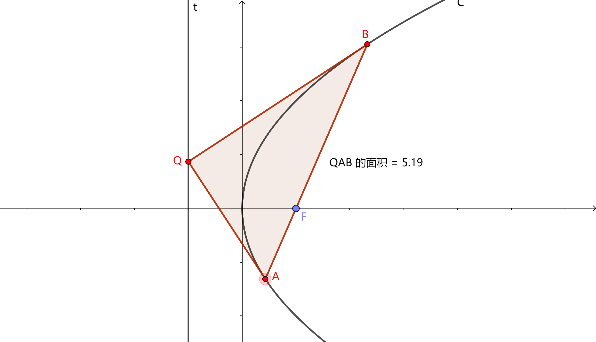
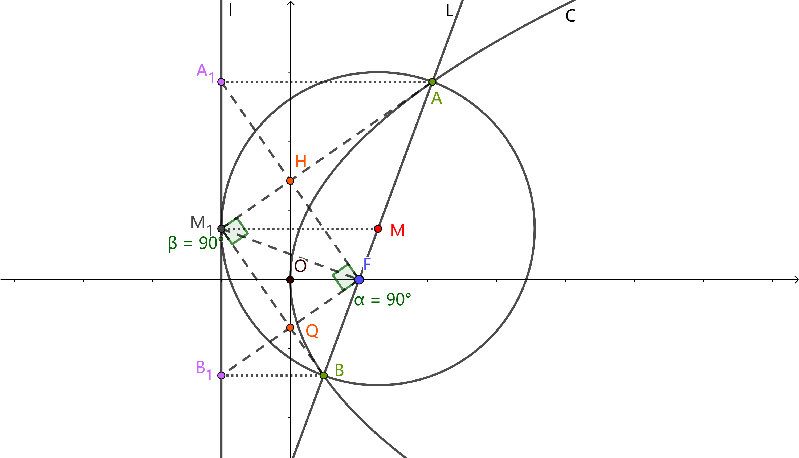
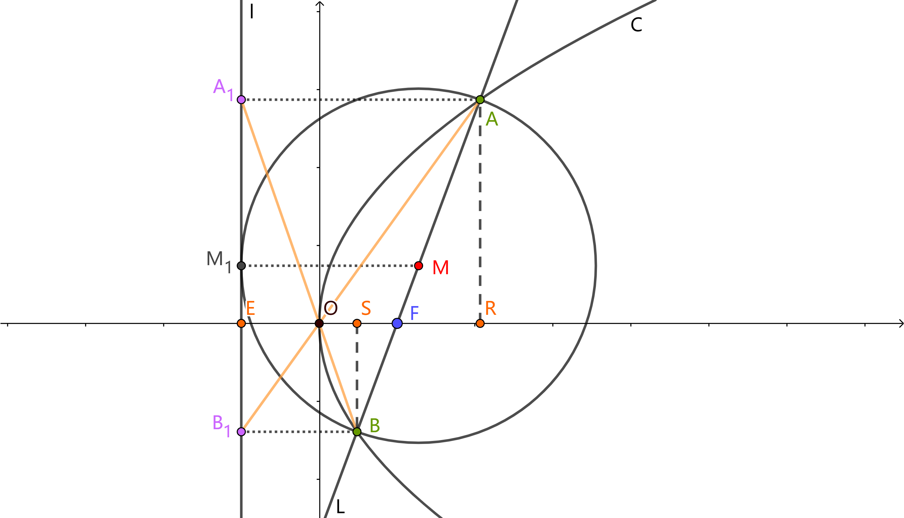

解析几何
这里记录一些高中数学解析几何实用的解题技巧。
阿基米德三角形
阿基米德三角形：抛物线的弦与过弦的端点的两条切线所围成的三角形。
在抛物线 $y^2=2px$中，弦$|AB|$为阿基米德三角形的底边，$M$为底边的中点，$Q$为两切线的交点。

性质
性质1：阿基米德三角形底边上的中线平行于抛物线的轴.
证明：设$A(x_1,y_1),B(x_2,y_2)$，则$M(\frac{x_1+x_2}{2},\frac{y_1+y_2}{2})$. 过A点的切线方程$y_1y=p(x_1+x)$，过B点的切线方程$y_2y=p(x_2+x)$. 联立方程$y_1^2=2px_1,y_2^2=2px_2$，解得两交点坐标为$Q(\frac{y_1y_2}{2p},\frac{y_1+y_2}{2})$.
性质2：$\boldsymbol{|AF|\cdot |BF|=|QF|^2}$.
性质3：若阿基米德三角形的底边过焦点$F$，顶点$Q$的轨迹为准线，且阿基米德三角形的面积最小值为$p^2$.
例题
例题1：已知$F$为抛物线$C: x^2=4y$的焦点，过点$F$的直线$l$与抛物线$C$相交于不同的两点$A,B$，抛物线$C$在$A,B$两点处的切线分别是$l_1,l_2$，且$l_1,l_2$相交于$P$，则$|PF|+\frac{32}{|AB|}$的最小值为( ).
解：设 $A(x_1,y_1),B(x_2,y_2)$，直线 $l:y=kx+1$，
联立$\begin{cases} y=kx+1 \\ x^2=4y \end{cases}$ 整理得 $x^2-4kx-4=0$，故 $x_1+x_2=4k，x_1x_2=-4$，
所以 $y_1+y_2=4k^2+2，y_1y_2=1$，
故 $|AB|=y_1+y_2+2=4k^2+4$.
法一：由阿基米德三角形性质2得 $|FA|\cdot |FB|=|PF|^2$.
$\begin{aligned}|PF|&=\sqrt{|FA|\cdot |FB|} \\ &=\sqrt{(y_1+1)(y_2+1)} \\ &=\sqrt{y_1y_2+(y_1+y_2)+1} \\ &=2\sqrt{k^2+1}\end {aligned}$
$\begin{aligned}|PF|+\frac{32}{|AB|}&=2\sqrt{k^2+1}+\frac{8}{k^2+1} \\ &=\sqrt{k^2+1}+\sqrt{k^2+1}+\frac{8}{k^2+1} \\ &\geq3\times\sqrt[3]{\sqrt{k^2+1}\cdot\sqrt{k^2+1}\cdot\frac{8}{k^2+1}} \\ &=6.\end{aligned}$
注：对非负数$a,b,c$，有$\boldsymbol{\frac{a+b+c}{3}\geq\sqrt[3]{abc}}$.
若不用基本不等式，可以用换元。令$t=\sqrt{k^2+1}$，则原式$=2t+\frac{8}{t^2}$，求个导，注意$t$的取值，也能算出来。但还是直接用基本不等式更快。
当且仅当$\sqrt{k^2+1}=\frac{8}{k^2+1}$，即$k=\pm\sqrt{3}$，最小值为$6$.
法二：由阿基米德三角形性质1和性质3得 $P(\frac{x_1+x_2}{2},-1)$，也可求出$|PF|$，做法与法一同。
抛物线焦点弦
过抛物线$y^2=2px(p>0)$的焦点$F$作一条直线$L$和此抛物线交于$A(x_1,y_1),B(x_2,y_2)$两点。
性质
性质0：$|AB|=x_1+x_2+p$
性质1：若直线$L$的倾斜角为$\theta $，则弦长$\boldsymbol{|AB|=\frac{2p}{sin^2\theta }}$
证明：若$\theta \neq\frac{π}{2}$时，直线$L$的方程为：$y=tan\theta (x-\frac{p}{2})$即$x=y\cdot cot\theta +\frac{p}{2}$，代入抛物线方程得$y^2-2py\cdot cot\theta -p^2=0$，由韦达定理得$\boldsymbol{y_1y_2=-p^2,y_1+y_2=2pcot\theta }$.
由弦长公式得$|AB|=\sqrt{1+cot^2\theta }$，$|y_1-y_2|=2p(1+cot^2\theta )=\frac{2p}{sin^2\theta }$
对于抛物线$x^2=2py$，弦长$|AB|=\frac{2p}{cos^2\theta },x_1x_2=-p^2$.
性质2：过焦点的弦通径长最短.
性质3：$\boldsymbol{S_{ΔOAB}=\frac{p^2}{2|sin\theta |}}$
$\frac{S^2_{ΔOAB}}{|AB|}=\frac{p^3}{8}$为定值.
对于抛物线$x^2=2py$，把$sin\theta $换成$cos\theta $即可.
性质4：$\boldsymbol{x_1x_2=\frac{p^2}{4}}$

性质5：以$AB$为直径的圆与抛物线的准线相切.（易证）
设$M$为$AB$的中点，过$A$点作准线的垂线$AA_1$，过$B$点作准线的垂线$BB_1$，过$M$点作准线的垂线$MM_1$，由梯形的中位线性质以及抛物线的定义知：
$|MM_1|=\frac{|AA_1|+|BB_1|}{2}=\frac{|AF|+|BF|}{2}=\frac{|AB|}{2}$
性质6：过$A$作准线的垂线$AA_1$，过$B$作准线的垂线$BB_1$，连$A_1F$，$B_1F$，则$\boldsymbol{A_1F\bot B_1F}$.
性质7：（1）$\boldsymbol{AM_1\bot BM_1}$
（2）$\boldsymbol{M_1F\bot AB}$
（3）$\boldsymbol{|M_1F|^2=|AF|\cdot |BF|}$（相似可证）
（4）如图2-1，$M_1,Q,F,H$四点共圆.

性质8：（1）$\boldsymbol{A,O,B_1}$三点共线. （2）$\boldsymbol{B,O,A_1}$三点共线.
证明：因为$k_{OA}=\frac{y_1}{x_1}=\frac{y_1}{\frac{y_1^2}{2p}}=\frac{2p}{y_1}$，$k_{OB_1}=\frac{y_2}{-\frac{p}{2}}=-\frac{2y_2}{p}$，而$y_1y_2=-p^2$，所以$k_{OA}=k_{OB}$，所以三点共线。同理可证（2）。
性质9：$\boldsymbol{\frac{1}{|FA|}+\frac{1}{|FB|}=\frac{2}{p}}$
证明：过$A$点作$AR$垂直于$x$轴于$R$，过$B$点作$BS$垂直于$x$轴于点$S$，设准线与$x$轴交点为$E$，直线$L$的倾斜角为$\theta $.
则$|ER|=|EF|+|FR|=p+|AF|cos\theta =|AF|$，$\boldsymbol{\therefore|AF|=\frac{p}{1-cos\theta}}$，同理可得$\boldsymbol{|BF|=\frac{p}{1+cos\theta}}$，得证。
椭圆
椭圆的三大定义
椭圆第一定义：（略）
椭圆第二定义：把平面内到一定点$F$的距离与到一定点$l$的距离之比为一常数$e(0<e<1)$点的轨迹叫椭圆.经过计算可得准线方程:$\boldsymbol{x=\pm \frac{a^2}{c}}$.
椭圆第三定义：把平面内到两个定点$A_1,A_2$的斜率乘积为一个常数$e^2-1(-1<e^2-1<0)$点的轨迹叫做椭圆.
椭圆第二定义
焦半径公式推导：

在该椭圆中，$F$为焦点，$l$为准线，$M(x,y)$为椭圆上一点，过$M$作$MM_1$交$l$于$M_1$. 设$FM$与$x$轴正半轴的夹角为$\theta$，设$F$到$l$距离为$p$.
结论：$\boldsymbol{FM=\frac{ep}{1+e\cdot \cos \theta}=a-e\cdot x}$
证明：设FM=r，由椭圆第二定义知$MM_1=\frac{r}{e}$.
则$p=r\cdot \cos \theta +\frac{r}{e}$.
$FM=\frac{ep}{1+e\cdot \cos \theta}$.
$\because \frac{|FM|}{|MM_1|}=e$.
$\therefore |FM|=e|MM_1|=e\cdot (\frac{a^2}{c}-x)=a-ex$.
证毕.